拖放与标题栏：第一轮静态稿
--shell-seam（nbook 是透明，卡片之间靠缝），这个设置一路继承到卡片里面的容器分栏。改法见第四节。一、拖动时浮出预备区（D1）
默认布局里拖资源管理器：开始拖动后，右栏与面板本该出现的位置浮出两块虚线的预备区，大小是它们记住的尺寸，叠在编辑区上，不挤动布局。拖到预备区上变成“放到面板”的高亮；松手后那块区域真的显示出来，视图放进去；取消或放到别处时预备区收起。
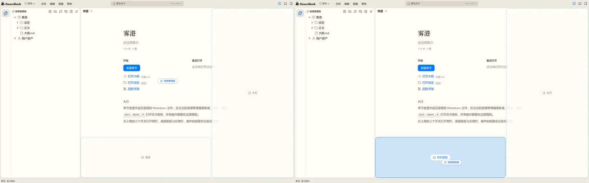
核对时发现，右栏被用户隐藏、侧栏拖到零时，拖动中同样没有落点，只剩活动栏（下图）。建议预备区一并覆盖这两种：凡是此刻没显示的侧栏、右栏、面板，不管是缺省不显示、被隐藏还是拖到零，拖动时都浮出。
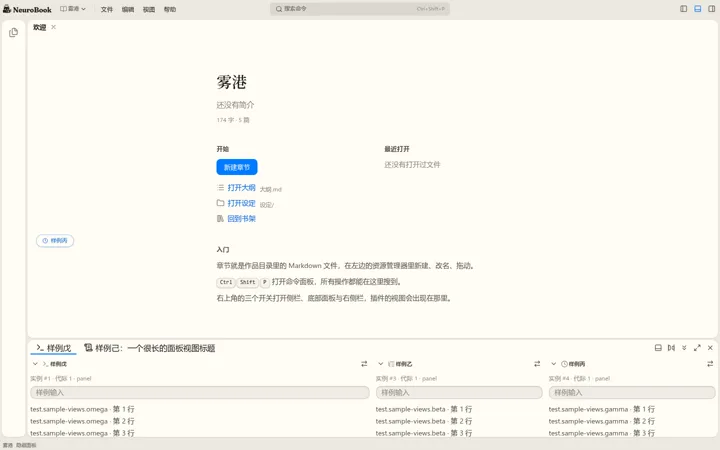
二、空区域与高亮（D2、D3）
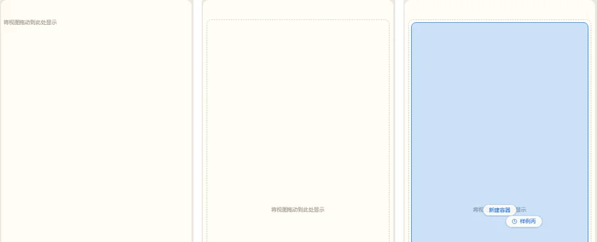
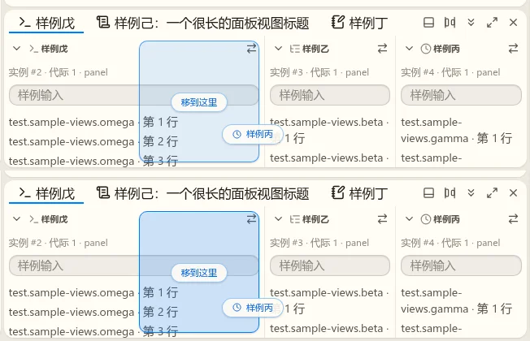
三、放下后的过渡（D4）
不另造动画：松手后落点高亮不立刻消失，而是从预览的位置平滑移动、变形到视图最终所在的矩形，再淡出，视图在它下面出现。新显示的区域（第一节）从预备区的矩形展开到最终位置。时长用主题的 --motion-base（nbook 140ms），系统开了减少动效时直接到位。这样不拉伸真实内容，也复用覆盖层已有的位置与尺寸过渡。
四、分栏：开放式分割线与整行收起（新加第 7 项）
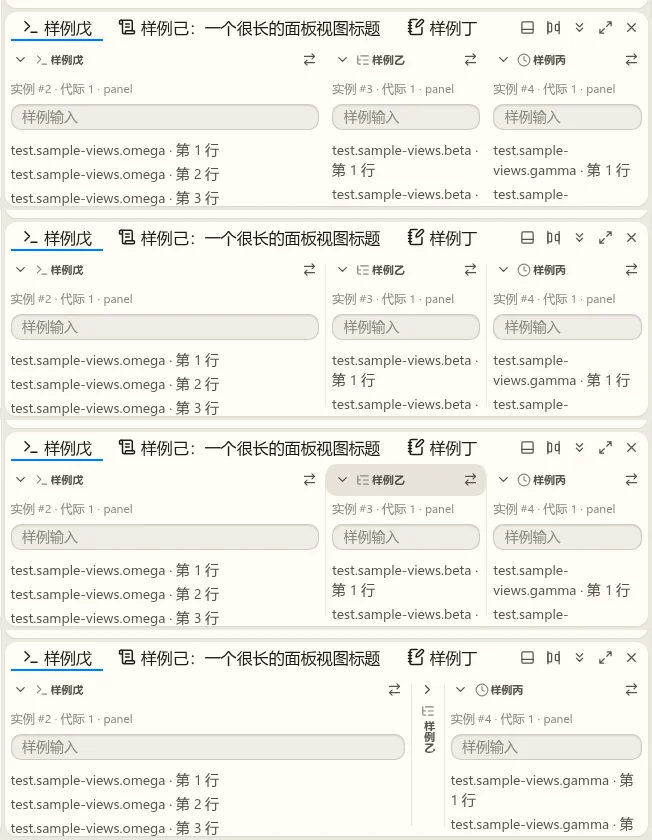
--divider，两端各留 10px，同活动栏与侧栏之间那条）；悬停在“样例乙”的标题上，整行变成悬停底色，点整行就收起；收起后的 32px 竖条两侧照样有分割线。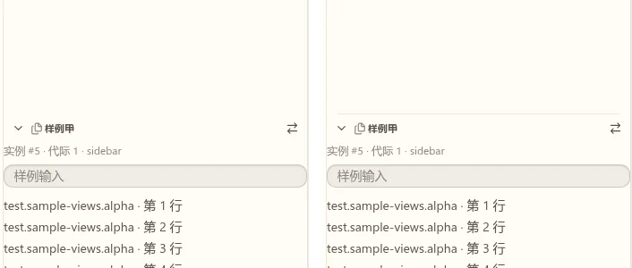
- 标题整行（除动作区外）点击就切换收起；收起的竖条整条点击就展开。拖动照旧：按住移动超过 6px 才是拖动，所以点击与拖动不冲突。
- 键盘：标题行可聚焦，Enter 切换收起，空格仍是拿起拖动（Spec 外壳三输出 23）。
- 分割线只画在 nbook 卡片里的容器分栏；macos 平铺照旧用贯穿的 1px 接缝。
五、标签太多时（新加第 9 项）
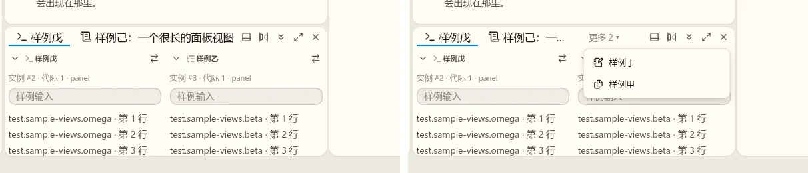
- 选中的标签总是显示在标签带上；按原顺序能放几个放几个，其余进“更多”。
- 拖动中标签带照样只在可见的标签之间画插入线；拖到“更多”上停半秒展开菜单，可以放到菜单里的容器前后。
- 右栏的标签带用同一套。活动栏（侧栏的 Switcher）条目放不下时现在是纵向滚动，被挤出去的条目同样没有提示（窗口高 230px 时实测）；建议也收进底部的“更多”，选中的条目总在。
六、标题栏逐级让位
不写死宽度，按“放不下就收下一项”测量：每一档先算这一档要的宽度，放不下才收下一项；往回展开时多留 40px 的回差，窗口宽在边界附近来回拖不会跳。语言、项目名长短不同时，切换点跟着变。
| 顺序 | 收起的项 | 中文、项目“雾港”时大约在 |
|---|---|---|
| 1 | 横排标志换成图形标志 | 1040px 以下 |
| 2 | 菜单栏收成 ≡ 图标按钮（打开按组的子菜单，见第七节） | 900px 以下 |
| 3 | 收起搜索框里的快捷键提示 | 760px 以下 |
| 4 | 三个布局按钮收进 ≡ 的“视图”组 | 640px 以下 |
| 5 | 项目切换只留书本图标 | 520px 以下 |
搜索框取中间的剩余宽度，最宽 560px、最窄 120px，到最后仍是能输入的长条。条目区（插件放的条目）照旧按优先级收进它自己的“更多”。
七、收拢菜单改成子菜单（M1）
≡ 打开后是“文件、编辑、视图、帮助”四行，悬停或方向键展开各自的子菜单，同旧应用（对照见差距清单第三节）。nb-ui 的 Dropdown 已支持 children 级联，菜单模型把每组变成一个父项即可。
八、各种状态下的拖放核对（新加第 8 项）
用样例视图摆出七种状态，在每种状态下拖到几个位置，记下覆盖层给的动作种类与截图。
| 状态 | 操作 | 现在 | 问题 | 建议 |
|---|---|---|---|---|
| 面板分栏，中间一栏收成竖条 | 拖到竖条上 | 只高亮竖条的一半，约 16px，提示飘到标签带旁 | 几乎看不见，也难瞄准 | 收起的竖条不算半区，前后各是一个插入位，画插入线；放下后拖入的视图展开，份额从相邻的展开栏分一半，相邻都收着时取剩余区 |
| 侧栏两栏，下面的收成标题行 | 拖到收起的标题行上 | 同上，16px 的细缝 | 同上 | 同上 |
| 收起的竖条与标题行 | 拖它本身、点它 | 抓标题能拖走（展开按钮不起拖）；点标题不展开 | 只有小箭头能展开 | 整行、整条可点（第四节） |
| 一个容器里全部收起 | 拖到剩余区 | 剩余区整块高亮，放下后在那里展开，其余仍收着 | 平时剩余区是一片空白 | 剩余区显示与空 Part 一样的淡色占位 |
| 面板收成标题头 | 拖到标签带，松手 | 新建容器并选中，但面板仍收着 | 放进去的视图看不见 | 放进收起的面板时展开面板 |
| 右栏被隐藏、侧栏拖到零 | 拖动 | 只有活动栏一个落点 | 同 D1 | 纳入第一节的预备区 |
| 面板最大化 | 拖面板里的视图到侧栏 | 正常，“移到这里” | 无 | |
| 紧凑呈现（760px） | 拖到面板分栏与侧栏 | 正常 | 无 | |
| 同一容器内 | 拖到另一栏的半区 | “移到这里”，只改顺序 | 无 |
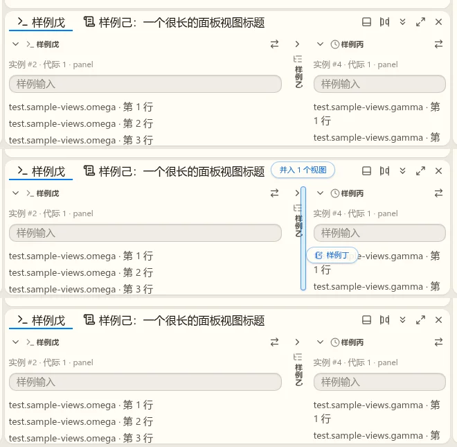
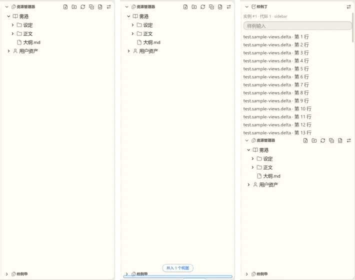
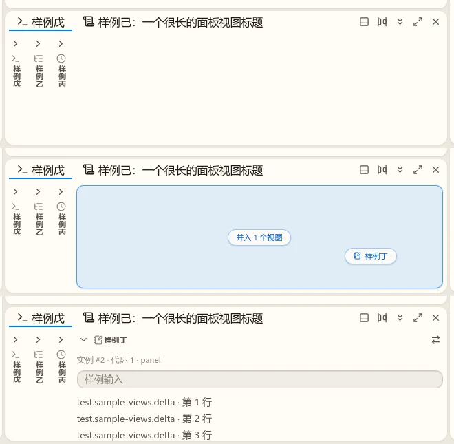
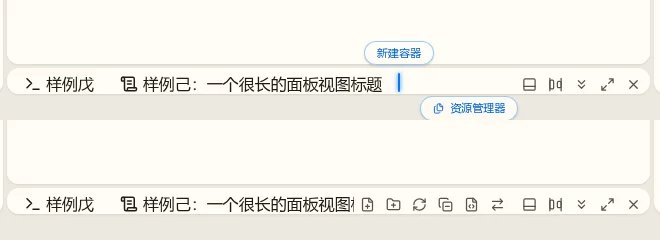
要你确认的
- 预备区覆盖所有此刻没显示的侧栏、右栏、面板（缺省不显示、被隐藏、拖到零）。推荐：覆盖。
- 收起的分栏当落点时改成前后插入线。推荐：改。
- 放进收起成标题头的面板时展开面板。推荐：展开。
- 全部收起时剩余区显示淡色占位。推荐：显示。
- 标签溢出用“截断 150px + 更多 N”。推荐：照稿。
- 标题栏按测量逐级让位，不写死宽度。推荐：照表。
- 放下后的过渡用“高亮滑到最终位置再淡出”。推荐：照第三节。
- 活动栏条目放不下时也收进“更多”。推荐：收。